Onboarding
Before the stateflow of a training starts, TrainAR takes the trainee through the same steps in every training, from choosing the training to placing it in the surroundings. Authors do not have to build any of this. It is part of the framework and uses the name, description, expert and preview of the training (see Managing Trainings).
The flow
| Step | What happens |
|---|---|
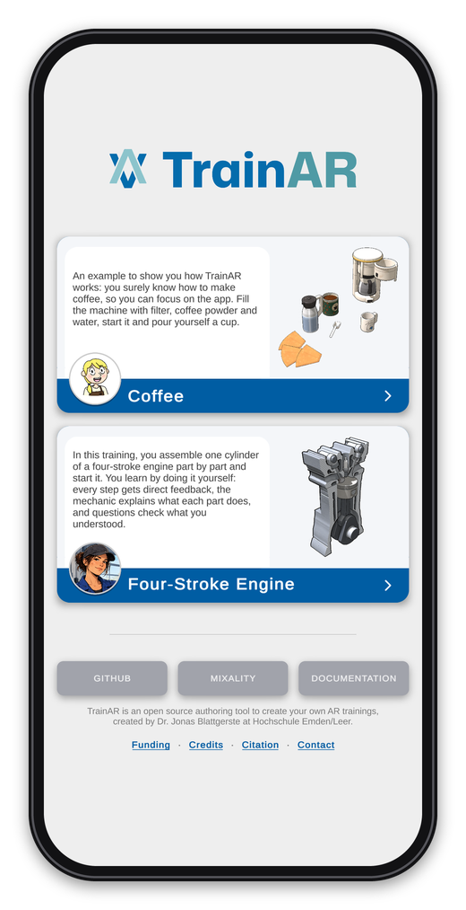 |
1. Home screen. After starting the app, the trainee sees all trainings of the project with their name, description, expert and preview, and chooses one. |
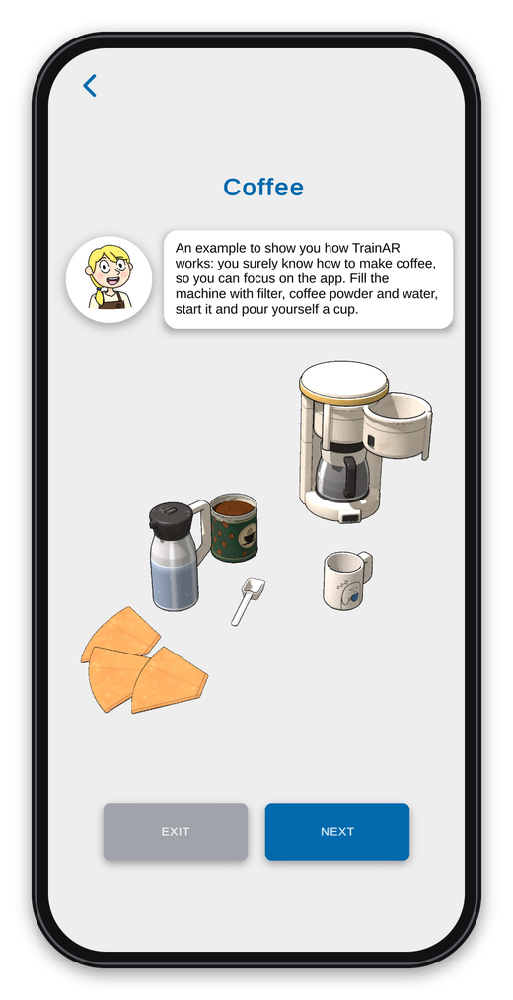 |
2. Introduction. The expert introduces the training with its description. Below is the preview of the training's setup, which TrainAR renders automatically before every build. Exit leads back to the home screen. |
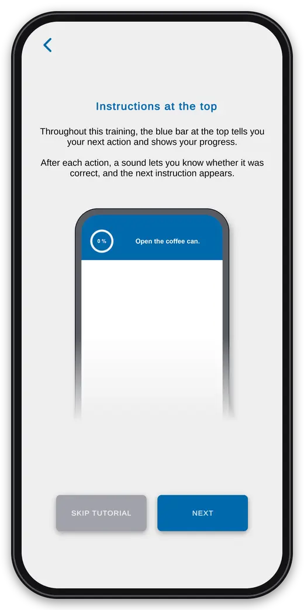 |
3. Instructions at the top. Five short pages now explain the interaction concept, each with an animation, and every page is read aloud. The first one shows that the blue bar at the top tells the trainee the next action and shows the progress, and that a sound tells whether an action was correct. Trainees can skip the onboarding here. |
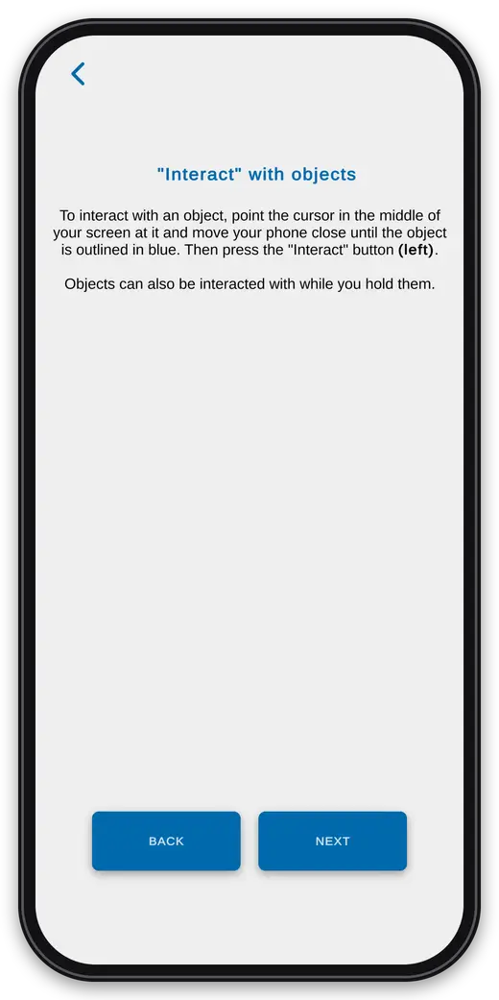 |
4. Interact. Point the cursor in the middle of the screen at an object and move the phone close until the object is outlined in blue, then press Interact. |
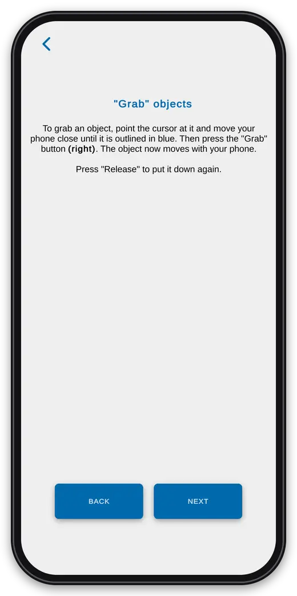 |
5. Grab. The same, then press Grab: the object moves with the phone until Release is pressed. |
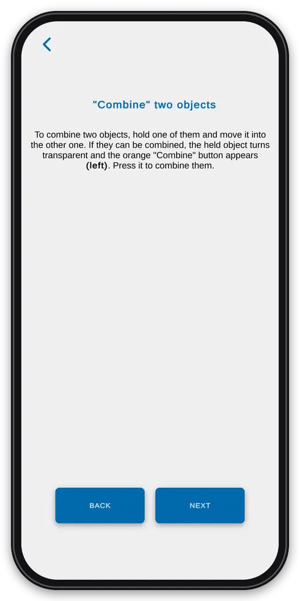 |
6. Combine. Move a held object into another one: if they can be combined, the held object turns transparent and Combine appears. |
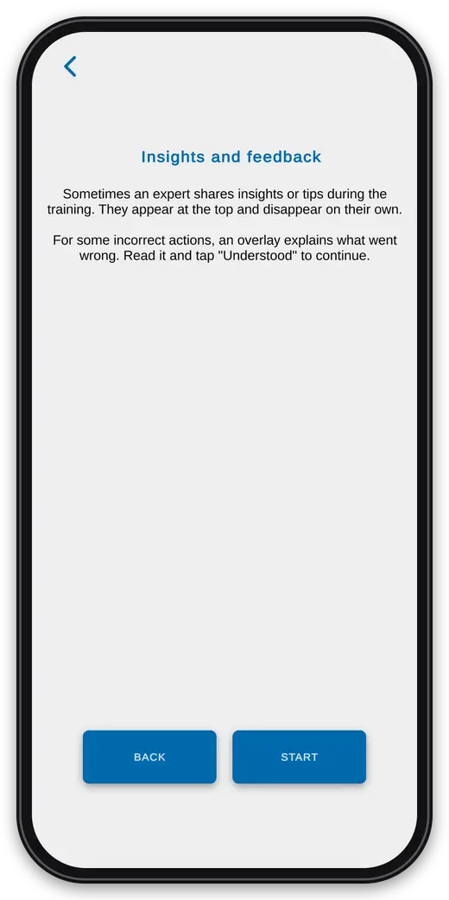 |
7. Insights and feedback. The expert shares insights at the top, and for some incorrect actions an overlay explains what went wrong until Understood is tapped. Start begins the training. |
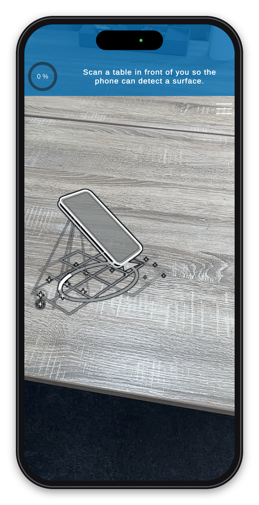 |
8. Scanning. The camera starts, and an animation shows the trainee how to move the phone over a table until a surface is detected. |
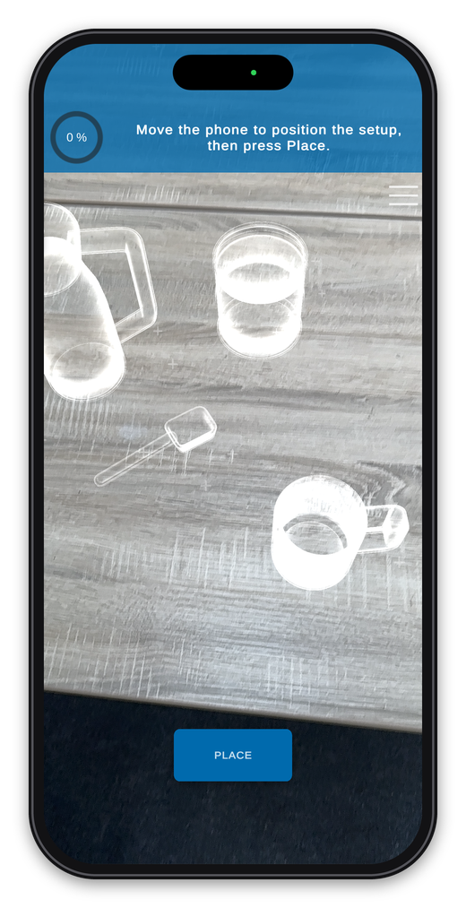 |
9. Placing. A see-through preview of the training's setup follows the phone. Place puts it down, and the stateflow of the training starts with the Start Training Node. |
During the training: tracking warnings
If the phone loses track of its surroundings during the training, TrainAR dims the screen and shows what the trainee can do about it. This happens automatically, and the training continues as soon as tracking works again.
| Too dark | Too few features | Too much motion |
|---|---|---|
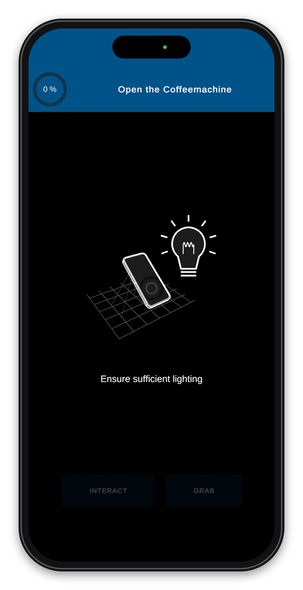 |
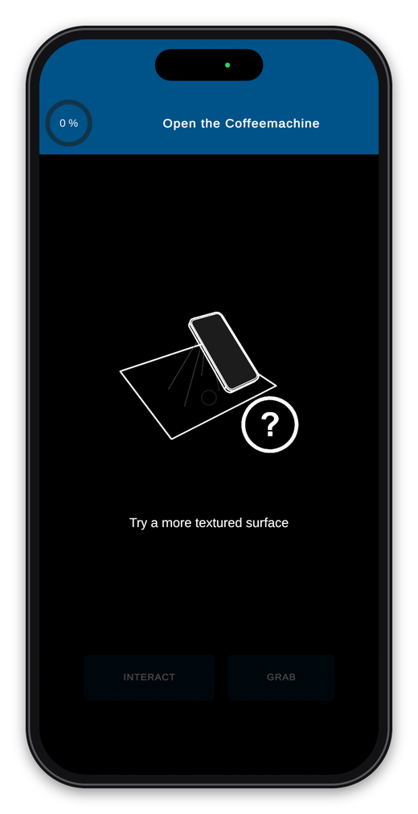 |
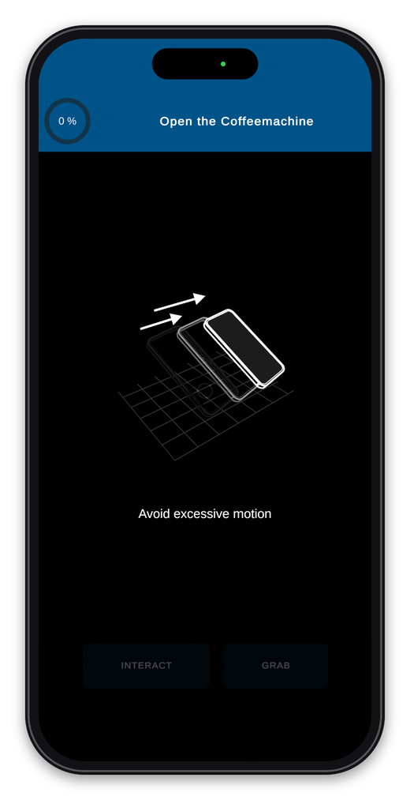 |